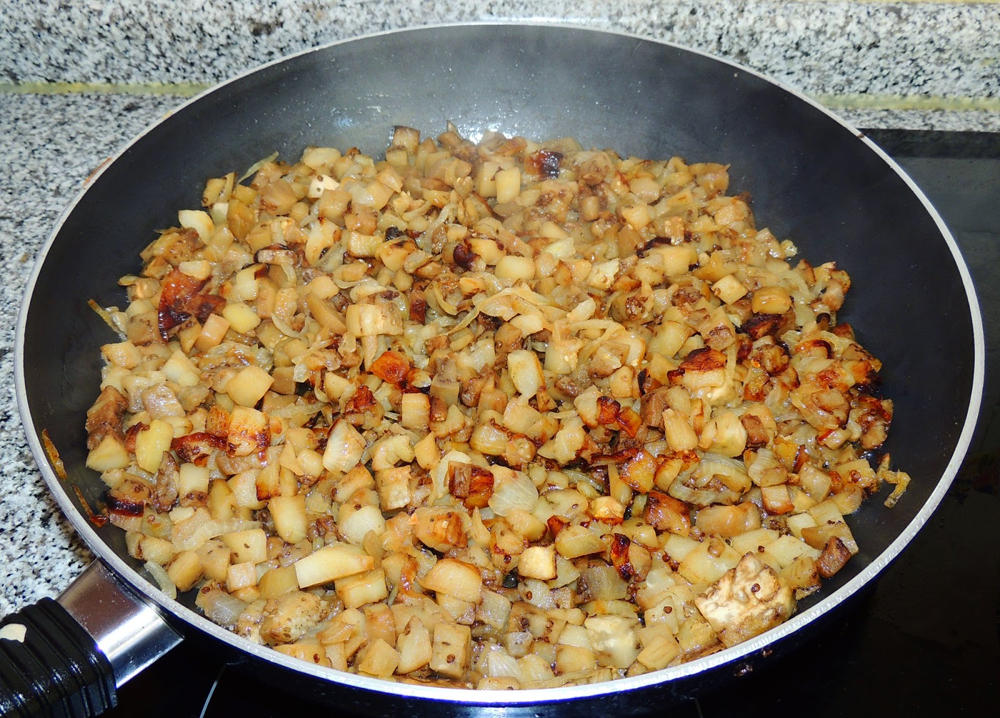
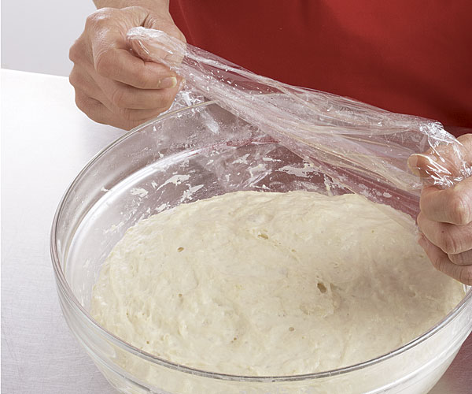
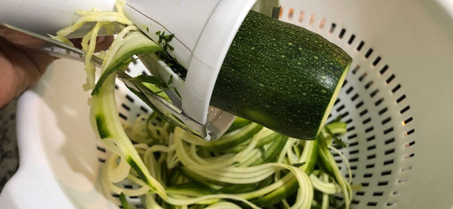
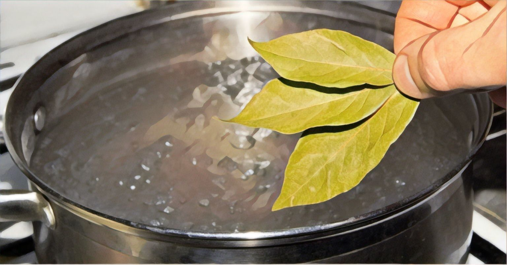
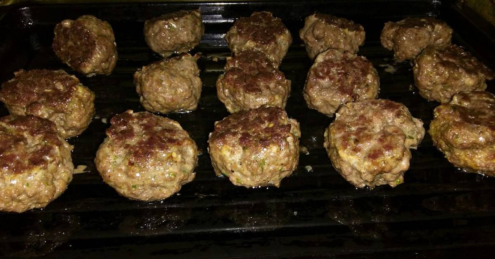
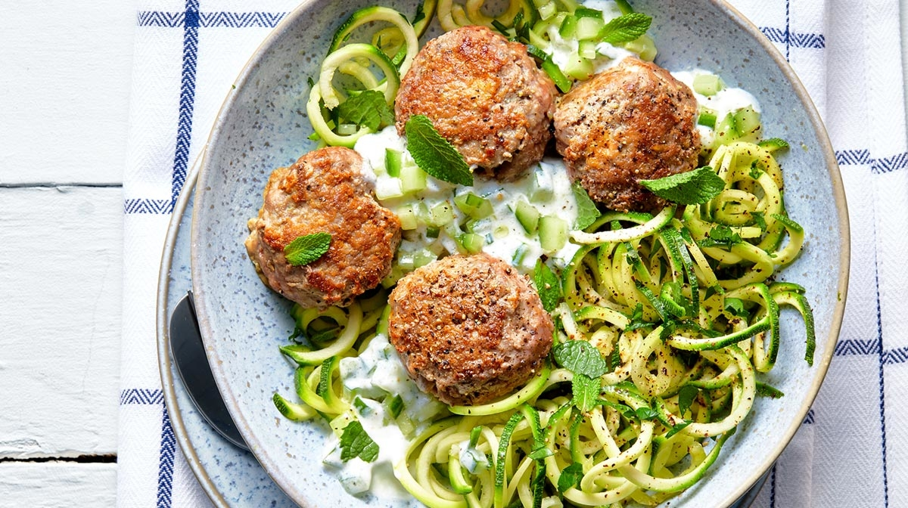
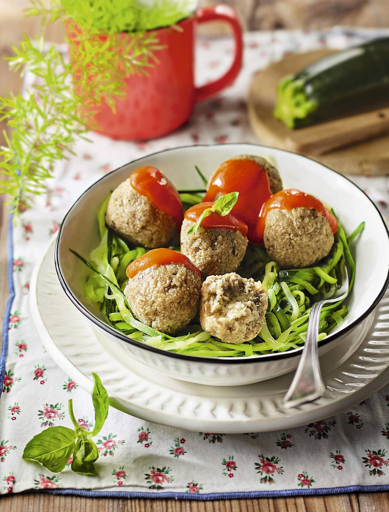

Regreso a menú
Albóndigas de berenjena con tomate
Índice:
Ingredientes (4 personas)
- 600 gramos de berenjenas.
- 1 cebolla.
- 2 calabacines.
- 1 huevo.
- 40 gramos de harina de huevo.
- 40 gramos de pan rallado.
- 300 gramos de salsa de tomate.
- Albahaca fresca.
- 1 hoja de laurel.
- Aceite de oliva.
- Pimienta y Sal.
Paso a paso
- Pela las berenjenas y córtalas en dados. Ponlas en remojo en agua y un poco de sal durante media hora para
quitarles el amargor. Luego, escurre y lava.

- Pela la cebolla y córtala en juliana. Saltea ambas con un chorrito de aceite, salpimienta, tapa y deja que
cueza 10 minutos a fuego lento, hasta que las dos estén blandas, y tritúralas con la batidora.

- Agrega el huevo, la harina de avena y el pan rallado y mezcla bien. Deja reposar la masa dentro de la nevera
tapada hasta que se enfríe.

- Lava los calabacines y con ayuda de una mandolina, córtalos primero en láminas finas y luego, a lo largo para
hacer los espaguetis.

- Pon agua a hervir con una pizca de sal y la hoja de laurel, añade los espaguetis, cuécelos durante 3 minutos.
Escurre y reserva.

- Toma porciones de la masa de berenjenas y forma las albóndigas. Ponlas sobre una bandeja de horno forrada
con papel sulfurizado y píntalas con aceite; hornéalas a 180 °C por 15 minutos o hasta que estén doraditas.

- Sírvelas sobre una base de espaguetis de calabacín, regadas con la salsa de tomate caliente y decoradas con unas
hojas de albahaca lavadas y secas. ¡Estarán increíbles!

Resultado final
¿Buscas una versión de las clásicas albóndigas pero mucho más saludable? Entonces no te pierdas esta sana receta de
albóndigas de berenjena con tomate que están de rechupete. Es un plato muy fácil de elaborar e igualmente delicioso.
Son ricas en vitaminas A, B1, B2 y ácido fólico. Ayudan a reforzar el sistema inmunológico y mejoran la resistencia
a las enfermedades.

Regreso hacia arriba.